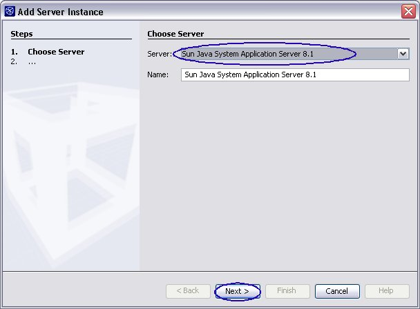

Exercise 0: Install and Configure Lab Environment
For JavaOne attendees using the lab machines provided, the steps in Exercise 0 are done for you as part of the login process. So please proceed to Exercise 1.
- Start the NetBeans 4.1 IDE and see if the IDE comes up.
- On Windows, Start >
Programs > NetBeans IDE > NetBeans IDE 4.1 > NetBeans IDE or
click NetBeans 4.1 desktop icon
- On Solaris, UNIX, or Linux, open a terminal window, then type <netbeans41_HOME>/bin/netbeans
- On Windows, Start >
Programs > NetBeans IDE > NetBeans IDE 4.1 > NetBeans IDE or
click NetBeans 4.1 desktop icon
-
Add Sun Java App Server 8.1 as an
additional Runtime platform (in addition to Tomcat 5) if you installed
NetBeans that does not contain Sun Java System App Server PE 8.1.
- Select Runtime tab
-
Right-click Servers
and select Add Server.

-
In the Choose
Server pane of the Add Server
Instance window, drop down the Server field and choose Sun Java System Application Server 8.1.
Click Next.

- In the Enter the Application Server location pane, select Browse button and select installation location of the Sun Java System App server. It is c:\Sun\AppServer under Windows and $HOME/SUNWappserver under Linux/Solaris. Click Next.
-
In the Choose
Application Server Instance pane:
- for Local Server Instance (Default Location) field, select localhost:4848 (domain1)
- for Admin User Name and Admin Password fields, type in the admin username and password.
-
Click Finish.

- Start the Sun Java System App Server. You can choose one
of the following 3 options to start the App Server.
-
Option 1: From the Start menu (Windows platform)
- Start->All Programs->Sun Microsystems->Application Server PE->Start Default Server
-
Option 2: From the command line
- Windows: c:\Sun\AppServer\bin\asadmin start-domain domain1 (to start admin server of domain1 and app server instance server1 under domain1)
- Solaris/Linux: /opt/SUNWappserver/bin/asadmin start-domain domain1 (to start admin server of domain1 and app server instance server1 under domain1)
-
Option 3: Within NetBeans IDE
- Select Runtime tab
- Expand Servers
- Right click Sun Java System Application Server 8.1 and select Start/Stop Server
- If the App Server is in "Server is stopped" state, click Start Server button
-
Option 1: From the Start menu (Windows platform)
-
Change configuration files
-
Set
<j2ee1.4tutorial_install>/j2eetutorial14/examples/common/build.propertiesfile as described in Chapter About This Tutorial, Section About the Examples of J2EE 1.4 tutorial. Basically, you set the "j2ee.home" and "j2ee.tutorial.home" properties. (If you encounter build failure later on, it is very likely that you did not set these variables or did not set them correctly.) Examples are as following:- Windows: (Windows: Use forward slash / not
backward slash
\; if you are using backward slash, you have to double it like \\ )
- j2ee.home=c:\\Sun\\AppServer or c:/Sun/AppServer
- j2ee.tutorial.home=c:\\j2eetutorial14 or c:/j2eetutorial14
-
Linux/Solaris:
- j2ee.home=$HOME/SUNWappserver
- j2ee.tutorial.home=$HOME/j2eetutorial14
- Windows: (Windows: Use forward slash / not
backward slash
\; if you are using backward slash, you have to double it like \\ )
-
Set the admin user's password in
<j2ee1.4tutorial_install>/j2eetutorial14/examples/common/admin-password.txtas described under Chapter About This Tutorial, Section About the Examples of J2EE 1.4 tutorial. Examples are as following:- AS_ADMIN_PASSWORD=adminadmin (or whatever password you set when you install J2EE 1.4 SDK)
-
Set